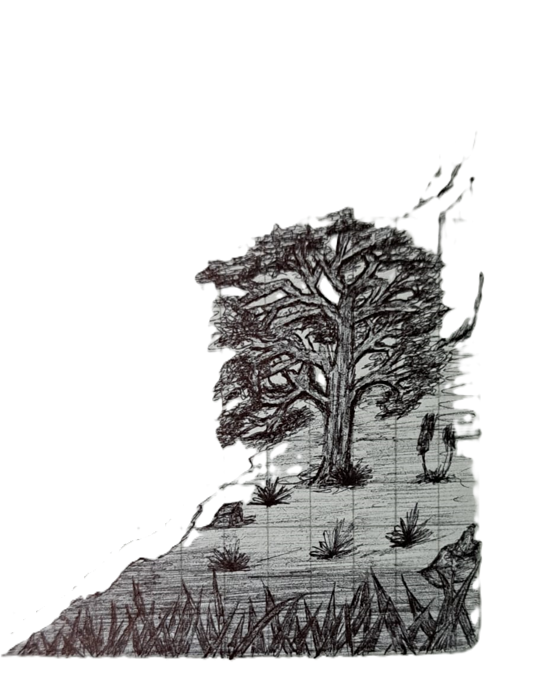

POEMA DEL CORAZÓN
Con mucha ternura para todos
EL ARBOL QUE DIBUJE
Que dificil es ver un arbol con el corazon roto
porque sus ramas ya no bailan con el viento
ni su corteza quiere proteger el interior
siente el vacio de la noche anterior
Sus raices ya no son firmes como antes
y pretende caer al suelo en un acto suicida
Quitar de sus ramas cada hoja en pequeñas partes
destrosado por los recuerdos sin una salida
La oscuridad lo tiene en sus manos
y la luz ya no alimenta su corazon
sus ganas de vivir quedaron en caos
dependiendo de tantos hios, de alguna cancion

Menu principal
Pagina dos
Pagina cuatro